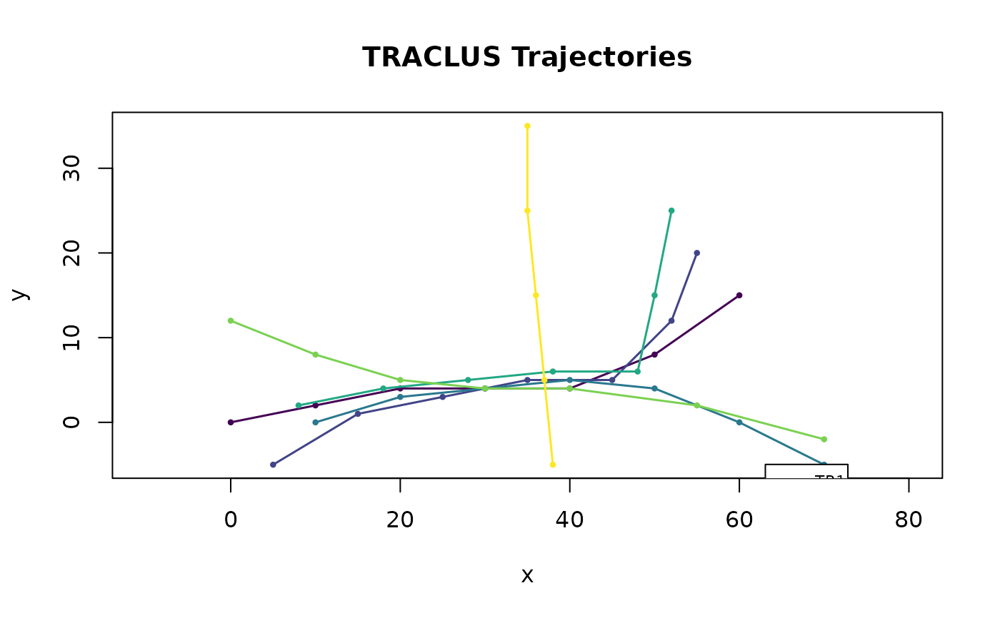

Base R visualizations for each stage of the TRACLUS workflow.
All methods use the viridis colour palette (via viridisLite::viridis())
for colourblind-safe display and accept ... for standard plot
parameters (main, xlim, ylim, cex, etc.).
Usage
# S3 method for class 'tc_trajectories'
plot(x, ...)
# S3 method for class 'tc_partitions'
plot(x, show_points = TRUE, ...)
# S3 method for class 'tc_clusters'
plot(x, ...)
# S3 method for class 'tc_representatives'
plot(x, show_clusters = FALSE, legend_pos = "bottomright", ...)
# S3 method for class 'tc_traclus'
plot(x, ...)Arguments
- x
A TRACLUS workflow object.
- ...
Additional arguments passed to
plot()orsegments(). Use to override default parameters likemain,xlim,ylim.- show_points
Logical; if
TRUE(default fortc_partitions), characteristic points are drawn as black X markers.- show_clusters
Logical; if
FALSE(default), cluster member segments are drawn in grey and only the representative lines appear in colour. IfTRUE, cluster segments are drawn in full colour with representatives overlaid.- legend_pos
Character; legend position (default
"bottomright"). Set toNAto suppress the legend.
See also
Other workflow functions:
print.TRACLUS,
summary.TRACLUS,
tc_cluster(),
tc_leaflet(),
tc_partition(),
tc_plot(),
tc_represent(),
tc_traclus(),
tc_trajectories()
Examples
trj <- tc_trajectories(traclus_toy,
traj_id = "traj_id",
x = "x", y = "y", coord_type = "euclidean"
)
#> Loaded 6 trajectories (40 points).
plot(trj)
